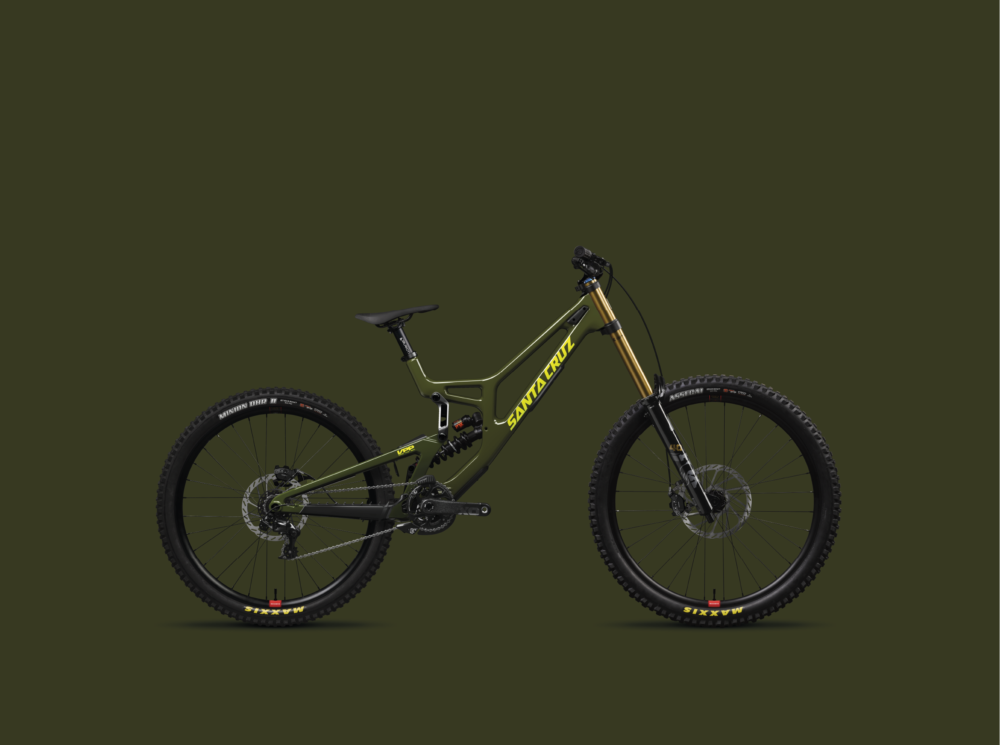
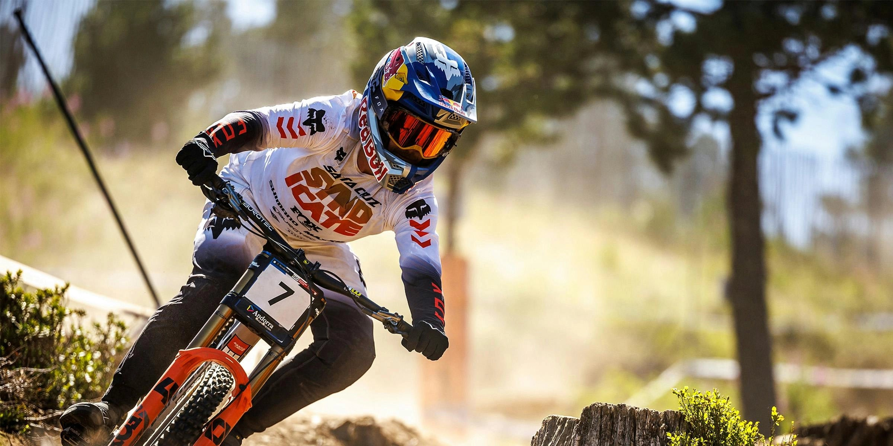
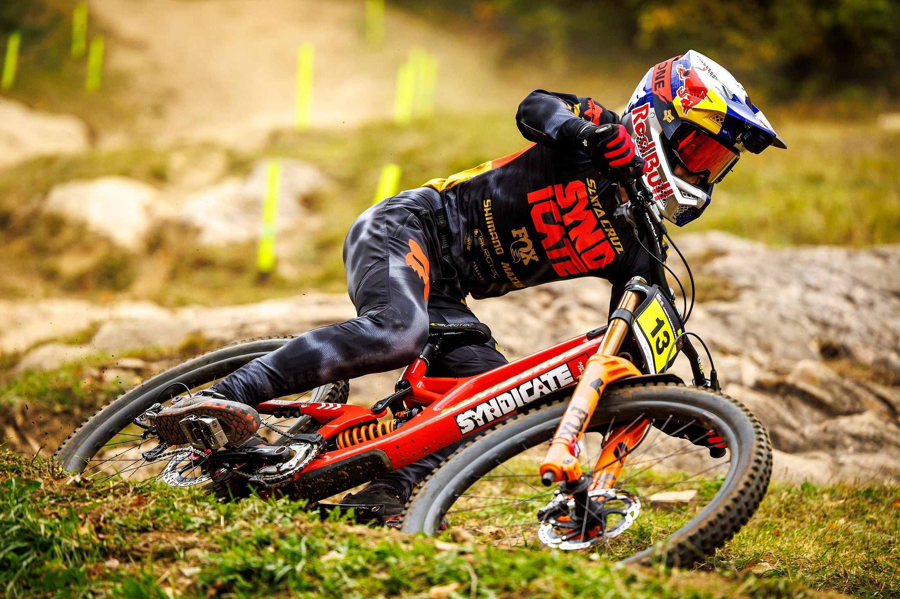
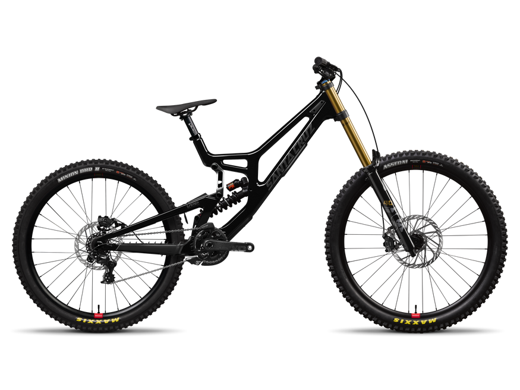
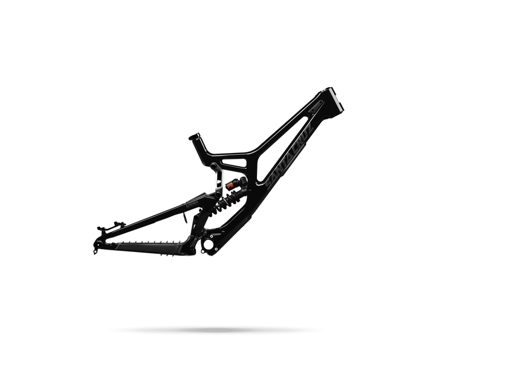
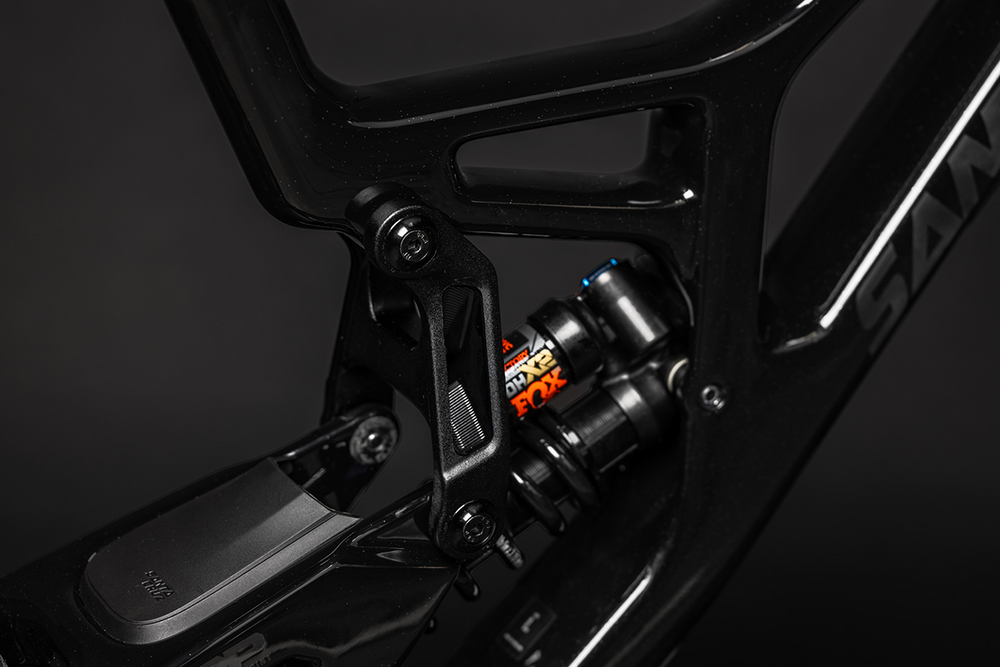
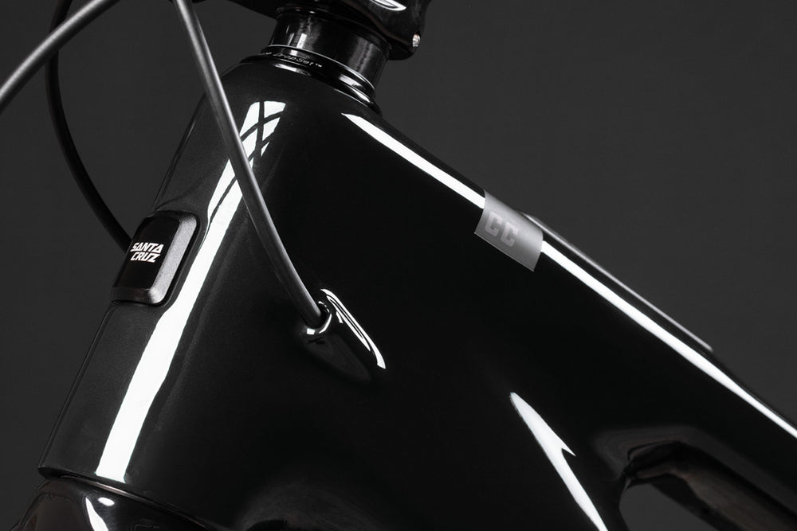
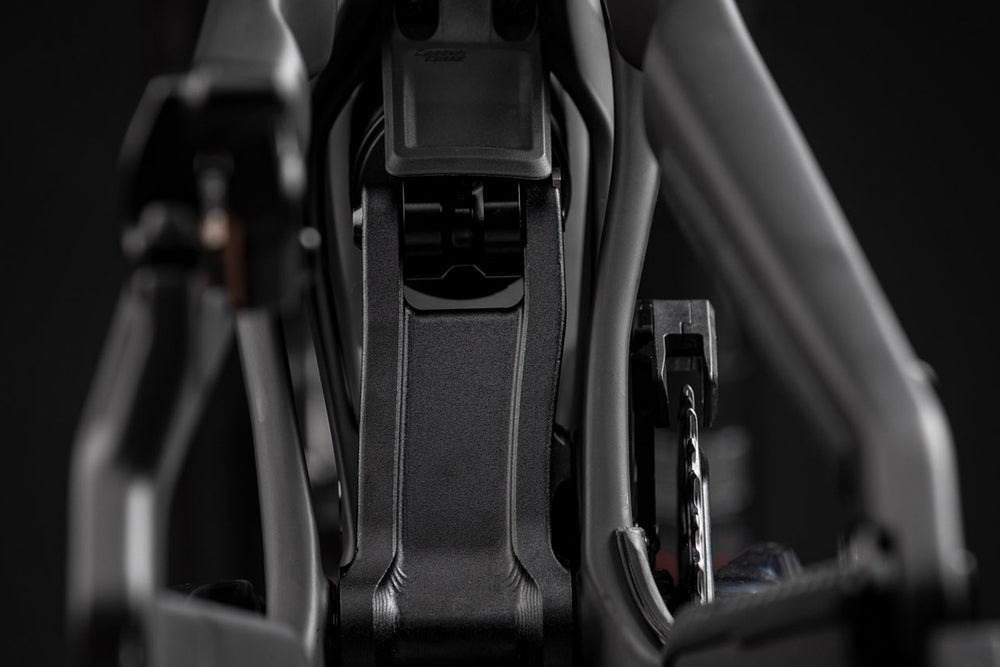
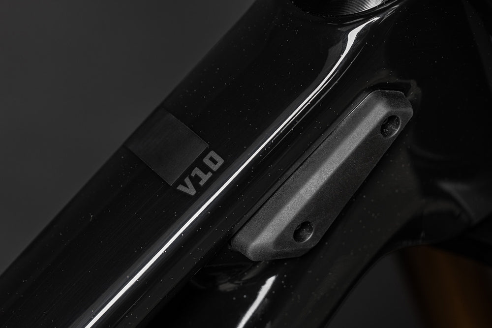
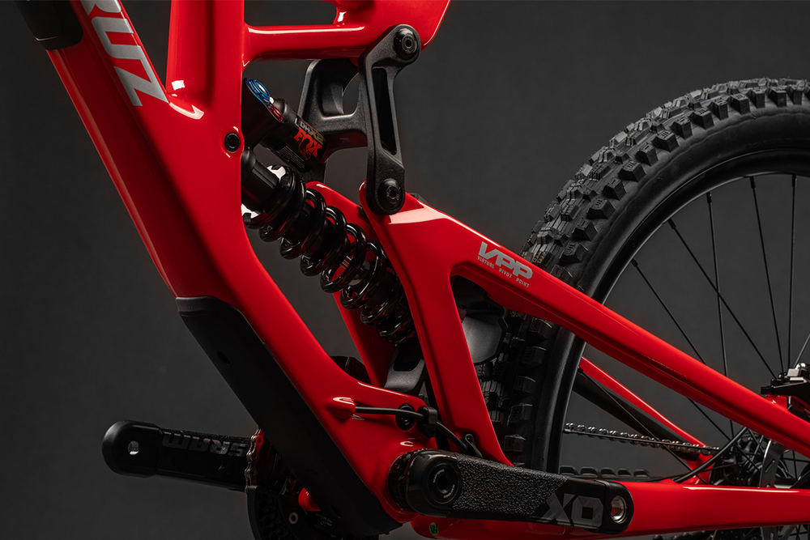

The V10 is the bike ridden by the Syndicate to World Cup victories. Fully refined—not redefined—the eighth generation V10 is designed for riders looking to emulate their heroes or find the best lines in the bike park. It’s for those who understand there’s no substitute for a proper downhill bike. Lap after lap, day after day, nothing compares to riding a downhill bike. Nothing.
DEVELOPING A WINNER

PARK TO PODIUM
DH Bikes are Thoroughbred, singularly focused matchines designed for pure speed and thrills downhill.

TUNED
Three points of 3-position adjustment allow fine-tuning for fit, terrain and preference: the rear axle flip chip (+5mm / 0 / -5mm) adjusts fore-aft weight balance; reach-adjust headset cups (-8mm / 0 / +8mm) customize fit, and the lower link flip chip calibrates BB height and head tube angle.
Filters:

carbon CC
$9.699
.png)
carbon CC
$7.699

carbon CC
$4.299

Designed, prototyped, tested, validated, and assembled by us right here in Santa Cruz, CA-and the UCI World Series SH circuit.

Few companie shave mastered carbon like we have. Our frames, desined in California, are made in-house and include a lifetime warranty.

Bikes aren't throwaway items, but they get ghrown around. Fram the tough frames to free bearings for life, Santa Cruz bikes are built to last.

Every bike we make-from the V10 down through the model range-undergoes the same rigorous development process by the same engeneers

208mm of VPP travel, exquisitely refined with ease of tuning and serviceability in mind.
ROLLER DOOR
Sit down with our engeneers an Syndicate for a deep dive into the development story